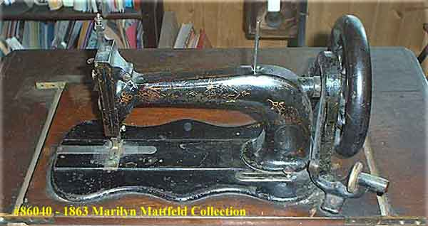
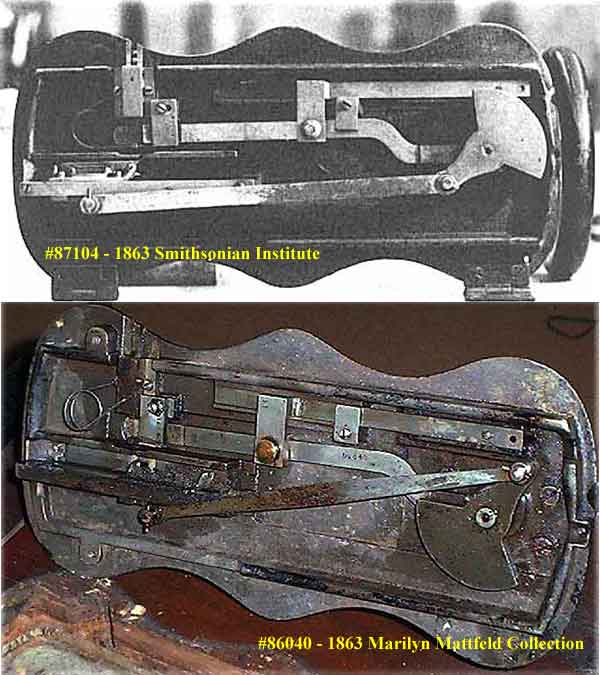
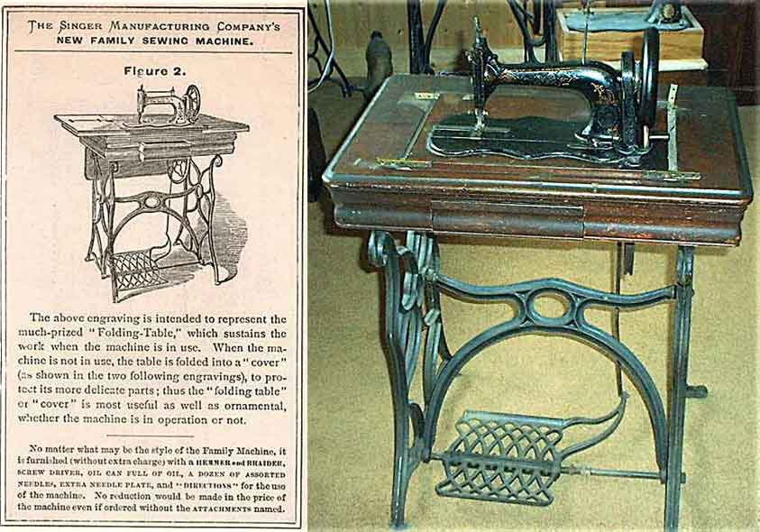
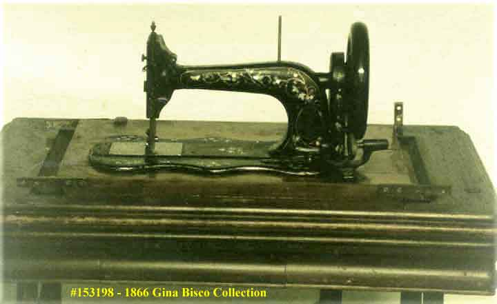
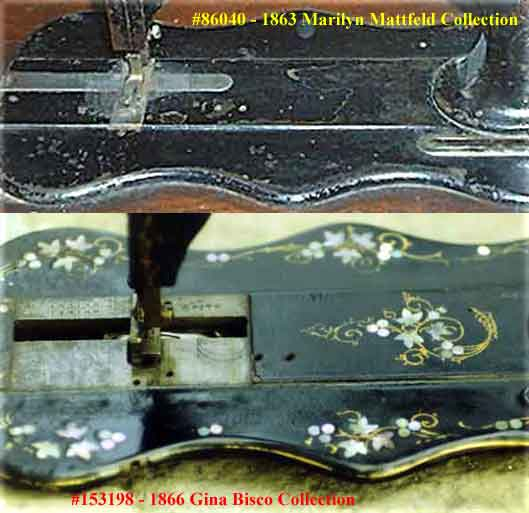
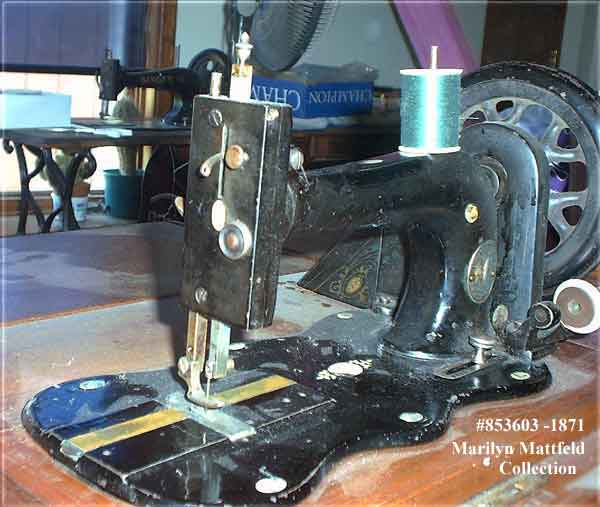

It is widely reported in various texts about early sewing machines, that Singer's New Family or Model 12 machine began to be produced in 1865. New evidence presented here shows that this is incorrect, and it is now known that the first Model 12s were produced in 1863.
The Singer 'New Family' machine was devised and designed by James Bolton, an employee of the Singer Company, who at the time was in charge of the Singer office in Chicago, Illinois.
In his diary he relates how he made the first prototype in Chicago, which he then sent to the Singer Company in New York, but when this machine was shown to Isaac M. Singer, Isaac told the company they should take a sledge hammer to it! Following this rather disconcerting critical assessment the project was shelved.
Undeterred, and maybe in a somewhat spiteful mood, James Bolton took the machine to Singer's rival Elias Howe, in the hope that he would purchase or manufacture the design. In the event Howe didn't buy it, and claimed he didn't have the necessary funds available to produce it, though he did express the opinion to Bolton that "it might prove a good-selling machine".
However, eventually the Singer Company turned away from their proposed 'sledge hammer' strategy and decided to put the fledgling Model 12 into production. This seems to have happened for two reasons; first, the Singer company had heard that maybe Howe would take it up, and second, the control of the company at the time was passing from Isaac to the board members after the incorporation of the Singer Manufacturing Company, and this 'young blood' was keen to produce something new.
These events are not dated in Bolton's diary, but could not have been before 1863, because Bolton mentions Hopper as president of the Singer Company, and Hopper took up this position in 1863.
The first machine we wish to discuss is Serial # 86040, which dates to 1863, and is the earliest Model 12 we are aware of.

Note the extremely primitive bobbin winder arrangement which is fixed to the wooden treadle table. See also the raised ridge which runs from left to right along the center of the bed.
This machine does not bear the name 'Singer' anywhere, but it can be identified from a couple of fortuitous pieces of evidence. The first are some pictures from a doctoral thesis written by Dr. David Hounsell, who dismantled several early Singer machines as part of his research at the Smithsonian Institute in Washington DC. The earliest machine shown is the underside of #87104, which also dates to 1863. As can be seen there are sufficient points of similarity to the underside of #86040 to say that the latter is definitely a Singer machine.

Another verifying piece of evidence is a small advertisement showing a Singer Model 12 machine and treadle base which is identical to that of #86040.

As mentioned above, this machine has a raised ridge which runs the length of the bed. It also has a strange arrangement of the slide plates which would cause problems in use. Imagine the shuttle becoming jammed in the race to the right of the needle in this machine. Whenever this happened it would be necessary to remove the left hand slide plate and the stitch plate before the right-hand plate could be removed to give access to the jammed shuttle.
It is likely that Bolton attempted to solve this problem by machining down the ridge in the needle and shuttle-race area almost down to the level of the bed, and fitting a large slide plate over this area which also doubled as the stitch plate. This new arrangement can be clearly seen on a Model 12 machine which was made about three years later than the first.
This second machine is #153198, and dates to 1866.

This new slide/stitch plate arrangement will have caused fresh problems however, particularly fouling of the needle and tangling of the threads when being removed, not to mention the ease with which paintwork could be scratched given the small amount of clearance for the plate under the needle and presser foot.

An alternative solution was found when it was realised that if the bed casting were to be changed, with the ridge to the right of the shuttle race lowered to the level of the bed, then the right-hand slide plate could be removed without disturbing the stitch plate or the left-hand slide plate. The date of introduction of this new bed casting is unclear, but it was certainly present by 1871 as machine #853603 below shows, so the date of its introduction can be narrowed down to some time between 1866 and 1871. This change can be narrowed down still further by machine #816716 which has the new casting (Information courtesy of Dave King)

Apart from a later modification to round off the corners of the right-hand end of the bed ridge, this became the familiar final slide plate arrangement and was used until the Model 12 was phased out of production in the late 1890s after having been by far Singer's most popular machine to that date.
The last batch of Model 12 machines left Singer's Kilbowie factory in Scotland in 1902.
Bolton, James (1901) unpublished manuscript. Printed in ISMACS News, No. 68, July 2000, pp. 9 - 17